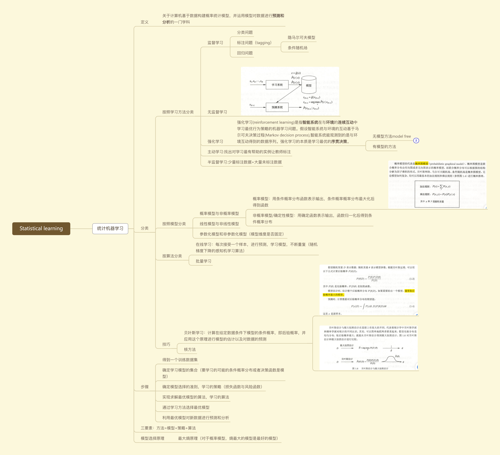
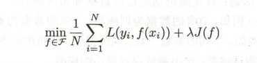
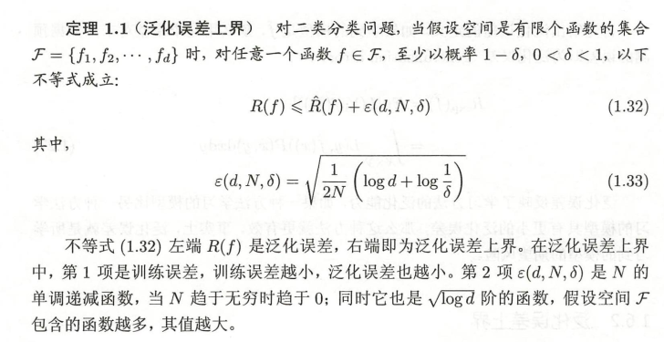
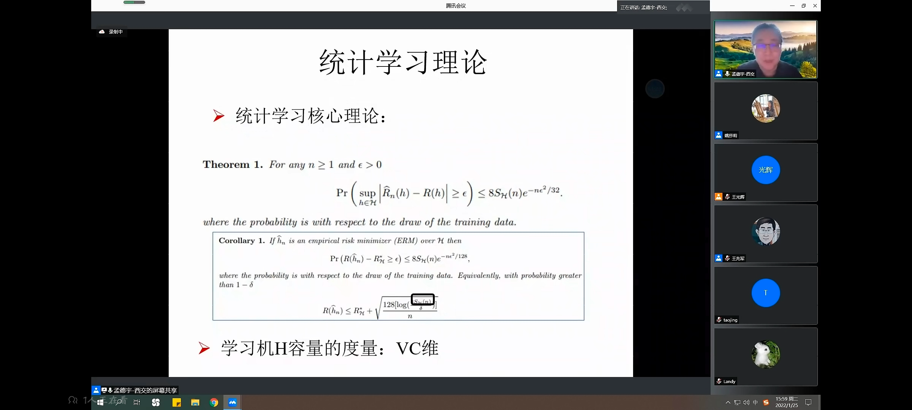
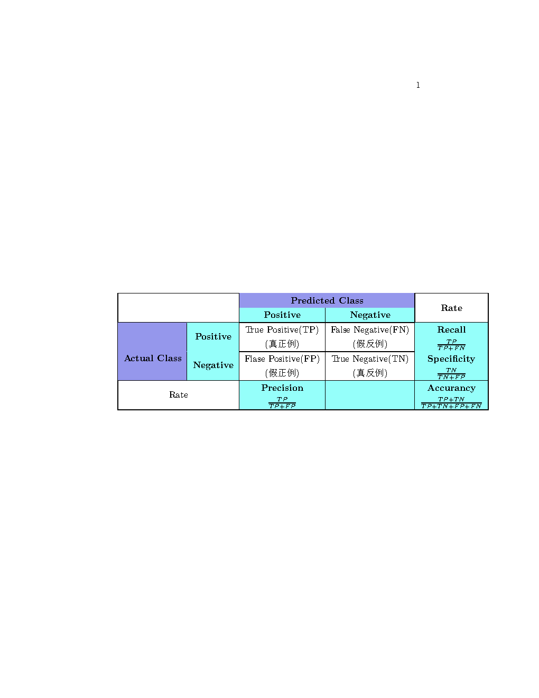

统计机器学习理论
The frequentist approach views the model parameters as unknown constants and estimates them by matching the model to the available training data using an appropriate metric.
框架

模型选择方法
正则化
模型选择的方法，正则化可以理解成一种对学习策略的改进（防止模型过拟合），在常规的风险函数或者损失函数的基础上加上一个正则化项或者叫罚项，一般具有以下形式：

前一项是风险函数（对损失函数取均值），后一项是正则化项。$\lambda$是超参数，需要利用验证数据(validafim data)进行估计
交叉验证
泛化能力（generalization ability）
泛化能力是指该学习方法对未知数据的预测能力，是学习方法本质上重要的性质。依据测试数据集对模型的泛化能力加以评价是不可靠的，统计学习理论试图从理论上对学习方法的泛化能力进行分析。
泛化误差：
事实上，泛化误差就是所学习到的模型的期望风险
泛化误差上界
学习方法的泛化能力分析往往是通过研究泛化误差的概率上界进行的，简称为泛化误差上界(generalization error bound)。
- 是样本容量的函数，样本容量增加，上界趋于0.
- 是假设空间容量的函数，假设空间容量越大，模型就越难学，泛化误差上界就越大。
当假设空间是有限个函数的集合时我们有：

证明用到了Hoeffding不等式：

监督学习
生成方法和判别方法
监督学习的方法可以分为生成方法和判别方法，两种方法分别产生生成模型和判别模型。
生成方法是指根据给定的数据学习他们的联合概率分布，求出条件概率分布作为预测的模型。如朴素贝叶斯法和隐马尔可夫模型
判别方法是直接根据给定的数据直接学习出决策函数或者条件概率分布。如感知机，决策树，支持向量机
生成方法的特点：
- 生成方法的学习收敛速度更快
- 当存在隐变量时，仍可以用生成方法学习，此时判别方法就不能用。
判别方法的特点：
- 直接面对预测，往往学习的准确率更高：
- 由于直接学习P(Y|X)或f(X),可以对数据进行各种程度上的抽象、定义特征并使用特征，因此可以简化学习问题。
分类问题
评价指标
评价分类性能的指标一般是分类准确率：分类正确的样本与总样本数量比（0-1损失函数时的经验风险）。二分类问题
通常以我们关注的类为正类，分类器在测试数据集的预测为正确或不正确。
二分类问题常用的评价指标是精确率(precision，也叫查准率)和召回率(recall，也叫查全率)

此外还可能会用到$F_1$，精确率和召回率的调和平均值% Please add the following required packages to your document preamble: % \usepackage{multirow} % \usepackage[table,xcdraw]\{xcolor\} % If you use beamer only pass "xcolor=table" option, i.e. \documentclass[xcolor=table]{beamer} \begin{table}[] \begin{tabular}{|cc|cc|c|} \hline \multicolumn{2}{|l|}{} & \multicolumn{2}{c|}{\cellcolor[HTML]{9698ED}\textbf{Predicted Class}} & \\ \cline{3-4} \multicolumn{2}{|c|}{\multirow{-2}{*}{}} & \multicolumn{1}{c|}{\cellcolor[HTML]{96FFFB}\textbf{Positive}} & \cellcolor[HTML]{96FFFB}\textbf{Negative} & \multirow{-2}{*}{\textbf{Rate}} \\ \hline \multicolumn{1}{|c|}{\cellcolor[HTML]{9698ED}} & \cellcolor[HTML]{96FFFB}\textbf{Positive} & \multicolumn{1}{c|}{\begin{tabular}[c]{@{}c@{}}True Positive(TP)\\ (真正例)\end{tabular}} & \begin{tabular}[c]{@{}c@{}}False Negative(FN)\\ (假反例)\end{tabular} & \cellcolor[HTML]{96FFFB}{\color[HTML]{000000} \textbf{\begin{tabular}[c]{@{}c@{}}Recall\\ $\frac{TP}{TP+FN}$$ \end{tabular}}} \\ \cline{2-5} \multicolumn{1}{|c|}{\multirow{-2}{*}{\cellcolor[HTML]{9698ED}\textbf{Actual Class}}} & \cellcolor[HTML]{96FFFB}\textbf{Negative} & \multicolumn{1}{c|}{\begin{tabular}[c]{@{}c@{}}Flase Positive(FP)\\ (假正例)\end{tabular}} & \begin{tabular}[c]{@{}c@{}}True Negative(TN)\\ (真反例)\end{tabular} & \cellcolor[HTML]{96FFFB}{\color[HTML]{000000} \textbf{\begin{tabular}[c]{@{}c@{}}Specificity\\ $\frac{TN}{TN+FP}$$ \end{tabular}}} \\ \hline \multicolumn{2}{|c|}{Rate} & \multicolumn{1}{c|}{\cellcolor[HTML]{96FFFB}\textbf{\begin{tabular}[c]{@{}c@{}}Precision\\ $\frac{TP}{TP+FP}$$ \end{tabular}}} & \cellcolor[HTML]{96FFFB} & \cellcolor[HTML]{96FFFB}{\color[HTML]{000000} \textbf{\begin{tabular}[c]{@{}c@{}}Accurancy\\ $\frac{TP+TN}{TP+TN+FP+FN}$$ \end{tabular}}} \\ \hline \end{tabular} \end{table}
当P和R所占权重不一致时，需要引入加权调和平均：$F_\beta$：
$\beta$越大，R所占权重越大。
标注问题
标注问题可以看做更复杂的分类问题，与分类问题不同的是，标注问题的输出是一个标记序列或者叫状态序列。标注问题在信息抽取和自然语言处理领域被广泛应用。如自然语言处理中的词性标注问题，信息抽取中的从英文文章中抽取名词短语等。